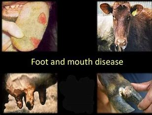
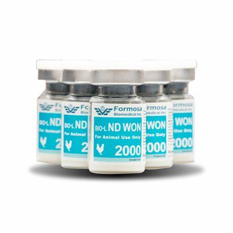

Foot-and-Mouth Disease (FMD) Prevention
Foot-and-Mouth Disease (FMD) is a contagious viral disease affecting livestock, causing severe economic losses. It is crucial to adopt effective prevention measures to reduce the risk of infection. Key information on FMD includes the following:
1. Symptoms of FMD:
- High fever lasting 2-6 days.
- Blisters on the tongue, lips, and inside the mouth.
- Drooling or excessive salivation.
- Lameness due to blisters on the hooves.
- Decreased milk production in dairy animals.
- Loss of appetite and weight.
2. Prevention Tips:
- Vaccination: Administer FMD vaccines as per local veterinary schedules (e.g., every 6-12 months).
- Quarantine New Animals: Isolate newly acquired animals for at least two weeks to ensure they are not carriers of the virus.
-
Maintain Hygiene:
- Regularly clean and disinfect animal shelters.
- Disinfect feeding and watering equipment.
- Control Movement: Avoid mixing your herd with animals from other farms, especially during outbreaks.
- Proper Disposal: Safely dispose of manure, bedding, and other materials to prevent the spread of the virus.
- Monitor Regularly: Watch for symptoms, especially during seasonal changes or outbreaks in nearby areas.

Newcastle Disease (ND) Prevention
Newcastle Disease (ND) is a contagious viral disease affecting poultry, causing severe respiratory, nervous, and digestive symptoms. It can lead to sudden death in severe cases, and it is crucial to adopt proper prevention strategies. Here is some important information on ND:
1. Symptoms of ND:
-
Respiratory Symptoms:
- Gasping for air.
- Coughing and sneezing.
-
Nervous Symptoms:
- Twisting of the neck.
- Loss of balance and paralysis.
-
Digestive Symptoms:
- Diarrhea (often greenish in color).
-
Other Signs:
- Reduced egg production or malformed eggs.
- Sudden death in severe cases.
2. Prevention Tips:
- Vaccination: Administer the Newcastle disease vaccine according to your veterinarian's schedule. Commonly, live vaccines are used for chicks and inactivated vaccines for adult birds.
-
Biosecurity Measures:
- Restrict visitors to poultry farms.
- Disinfect footwear and equipment used on the farm.
- Quarantine New Birds: Isolate newly introduced birds for 2-4 weeks to ensure they are not infected.
-
Proper Hygiene:
- Clean drinking water daily.
- Regularly remove droppings and disinfect poultry housing.
- Avoid Wild Birds: Prevent wild birds from coming into contact with your flock, as they can spread the disease.